Examples
This page illustrates the Julia package MIRTjim.
This page comes from a single Julia file: 1-examples.jl.
You can access the source code for such Julia documentation using the 'Edit on GitHub' link in the top right. You can view the corresponding notebook in nbviewer here: 1-examples.ipynb, or open it in binder here: 1-examples.ipynb.
Setup
Packages needed here.
using MIRTjim: jim, prompt, mid3
using AxisArrays: AxisArray
using ColorTypes: RGB
using OffsetArrays: OffsetArray
using Unitful
using Unitful: μm, s
import Plots
using InteractiveUtils: versioninfoThe following line is helpful when running this file as a script; this way it will prompt user to hit a key after each figure is displayed.
isinteractive() ? jim(:prompt, true) : prompt(:draw);Simple 2D image
The simplest example is a 2D array. Note that jim is designed to show a function f(x,y) sampled as an array z[x,y] so the 1st index is horizontal direction.
x, y = 1:9, 1:7
f(x,y) = x * (y-4)^2
z = f.(x, y') # 9 × 7 array
jim(z ; xlabel="x", ylabel="y", title="f(x,y) = x * (y-4)^2")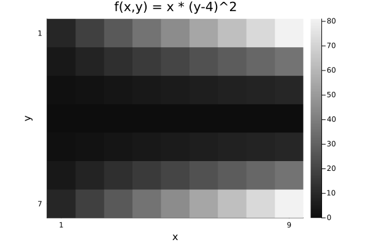
Compare with Plots.heatmap to see the differences (transpose, color, wrong aspect ratio, distractingly many ticks):
Plots.heatmap(z, title="heatmap")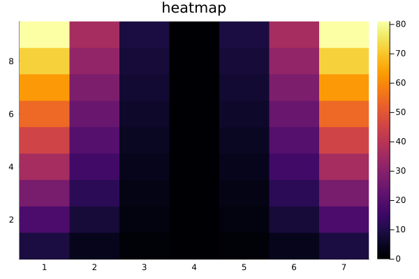
isinteractive() && prompt();Images often should include a title, so title = is optional.
jim(z, "hello")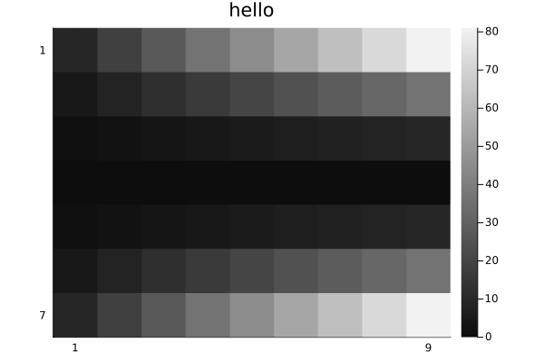
OffsetArrays
jim displays the axes naturally.
zo = OffsetArray(z, (-3,-1))
jim(zo, "OffsetArray example")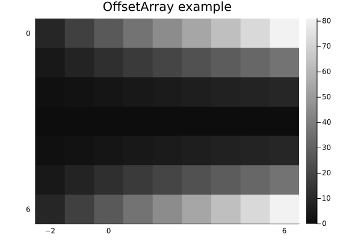
3D arrays
jim automatically makes 3D arrays into a mosaic.
f3 = reshape(1:(9*7*6), (9, 7, 6))
jim(f3, "3D"; size=(600, 300))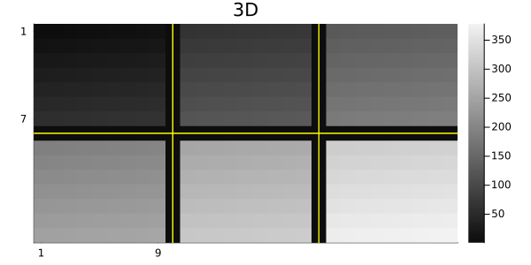
One can specify how many images per row or column for such a mosaic.
x11 = reshape(1:(5*6*11), (5, 6, 11))
jim(x11, "nrow=3"; nrow=3)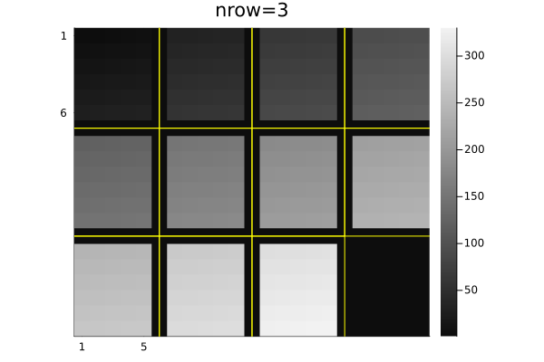
jim(x11, "ncol=6"; ncol=6, size=(600, 200))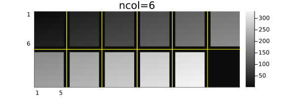
Central slices with mid3
The mid3 function shows the central x-y, y-z, and x-z slices (axial, coronal, sagittal) planes. Making useful xticks and yticks in this case takes some fiddling.
x,y,z = -20:20, -10:10, 1:30
xc = reshape(x, :, 1, 1)
yc = reshape(y, 1, :, 1)
zc = reshape(z, 1, 1, :)
rx = reshape(range(2, 19, length(z)), size(zc))
ry = reshape(range(2, 9, length(z)), size(zc))
cone = @. abs2(xc / rx) + abs2(yc / ry) < 1
jim(mid3(cone); color=:cividis, title="mid3")
xticks = ([1, length(x), length(x)+length(z)],
["$(x[begin])", "$(x[end]), $(z[begin])", "$(z[end])"])
yticks = ([1, length(y), length(y)+length(z)],
["$(y[begin])", "$(y[end]), $(z[begin])", "$(z[end])"])
Plots.plot!(;xticks , yticks)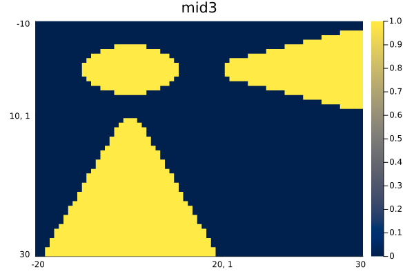
Arrays of images
jim automatically makes arrays of images into a mosaic.
z3 = reshape(1:(9*7*6), (7, 9, 6))
z4 = [z3[:,:,(j-1)*3+i] for i=1:3, j=1:2]
jim(z4, "Arrays of images")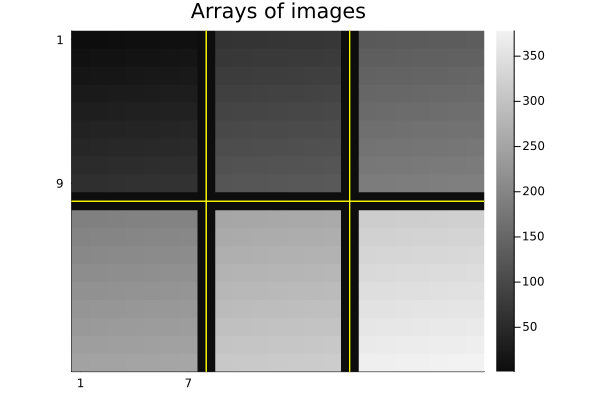
Units
jim supports units, with axis and colorbar units appended naturally.
x = 0.1*(1:9)u"m/s"
y = (1:7)u"s"
zu = x * y'
jim(x, y, zu, "units" ;
clim=(0,7).*u"m", xlabel="rate", ylabel="time", colorbar_title="distance")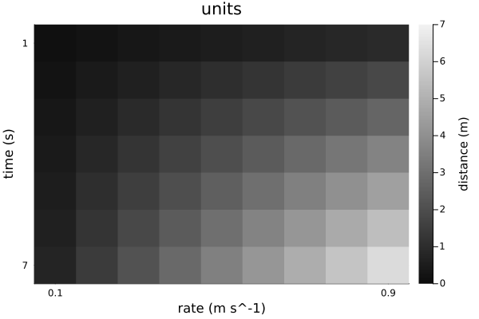
Note that aspect_ratio reverts to :auto when axis units differ.
Image spacing is appropriate even for non-square pixels if Δx and Δy have matching units.
x = range(-2,2,201) * 1u"m"
y = range(-1.2,1.2,150) * 1u"m" # Δy ≢ Δx
z = @. sqrt(x^2 + (y')^2) ≤ 1u"m"
jim(x, y, z, "Axis units with unequal spacing"; color=:cividis, size=(600,350))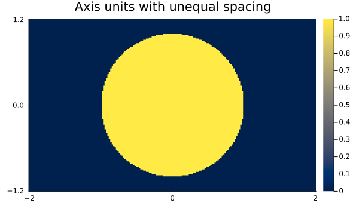
Units are also supported for 3D arrays, but the z-axis is ignored for plotting.
x = (2:9) * 1μm
y = (3:8) * 1/s
z = (4:7) * 1μm * 1s
f3d = rand(8, 6, 4) # * s^2
jim(x, y, z, f3d, "3D with axis units")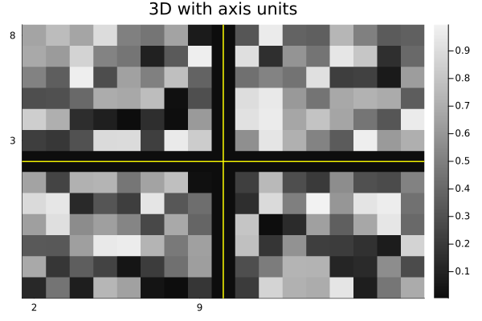
One can use a tuple for the axes instead; only the x and y axes are used.
jim((x, y, z), f3d, "axes tuple")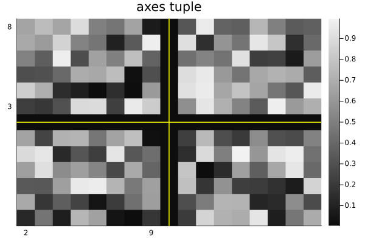
AxisArrays
jim displays the axes (names and units) naturally by default:
x = (1:9)μm
y = (1:7)μm/s
za = AxisArray(x * y'; x, y)
jim(za, "AxisArray")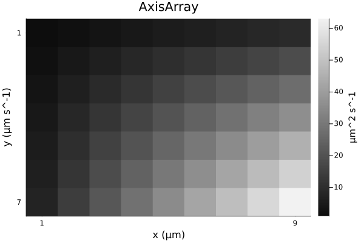
Color images
jim(rand(RGB{Float32}, 8, 6); title="RGB image")![]()
Options
See the docstring for jim for its many options. Here are some defaults.
jim(:defs)Dict{Symbol, Any} with 22 entries:
:colorbar => :legend
:nrow => 0
:line3plot => true
:clim => nothing
:ncol => 0
:ylabel => nothing
:title => ""
:yflip => nothing
:abswarn => false
:mosaic_npad => 1
:fft0 => false
:prompt => false
:yreverse => nothing
:tickdigit => 1
:xlabel => nothing
:aspect_ratio => :infer
:line3type => :yellow
:padval => nothing
:color => :grays
⋮ => ⋮One can set "global" defaults using appropriate keywords from above list. Use :push! and :pop! for such changes to be temporary.
jim(:push!) # save current defaults
jim(:colorbar, :none) # disable colorbar for subsequent figures
jim(:yflip, false) # have "y" axis increase upward
jim(rand(9,7), "rand", color=:viridis) # kwargs... passed to heatmap()![]()
jim(:pop!); # restoreLayout
One can use jim just like plot with a layout of subplots. The gui=true option is useful when you want a figure to appear even when other code follows. Often it is used with the prompt=true option (not shown here). The size option helps avoid excess borders.
p1 = jim(rand(5,7); prompt=false)
p2 = jim(rand(6,8); color=:viridis, prompt=false)
p3 = jim(rand(9,7); color=:cividis, title="plot 3", prompt=false)
jim(p1, p2, p3; layout=(1,3), gui=true, size = (600,200))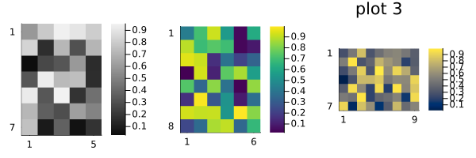
Reproducibility
This page was generated with the following version of Julia:
using InteractiveUtils: versioninfo
io = IOBuffer(); versioninfo(io); split(String(take!(io)), '\n')12-element Vector{SubString{String}}:
"Julia Version 1.12.6"
"Commit 15346901f00 (2026-04-09 19:20 UTC)"
"Build Info:"
" Official https://julialang.org release"
"Platform Info:"
" OS: Linux (x86_64-linux-gnu)"
" CPU: 4 × INTEL(R) XEON(R) PLATINUM 8573C"
" WORD_SIZE: 64"
" LLVM: libLLVM-18.1.7 (ORCJIT, sapphirerapids)"
" GC: Built with stock GC"
"Threads: 1 default, 1 interactive, 1 GC (on 4 virtual cores)"
""And with the following package versions
import Pkg; Pkg.status()Status `~/work/MIRTjim.jl/MIRTjim.jl/docs/Project.toml`
[39de3d68] AxisArrays v0.4.8
[3da002f7] ColorTypes v0.12.1
[e30172f5] Documenter v1.17.0
[9ee76f2b] ImageGeoms v0.11.2
[71a99df6] ImagePhantoms v0.8.1
[98b081ad] Literate v2.21.0
[170b2178] MIRTjim v0.26.0 `.`
[6fe1bfb0] OffsetArrays v1.17.0
[91a5bcdd] Plots v1.41.6
[1986cc42] Unitful v1.28.0
[b77e0a4c] InteractiveUtils v1.11.0This page was generated using Literate.jl.